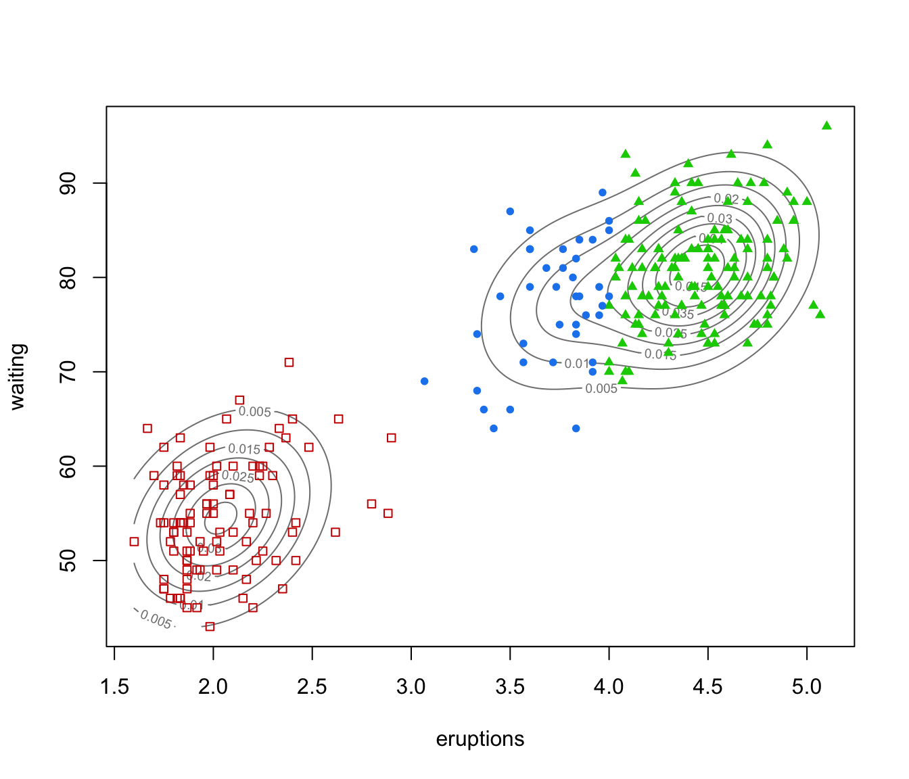
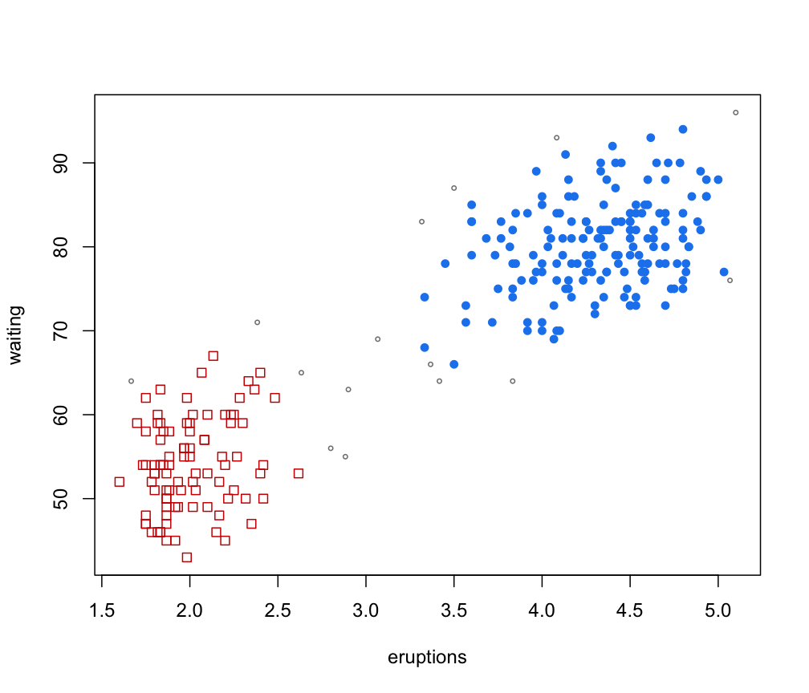
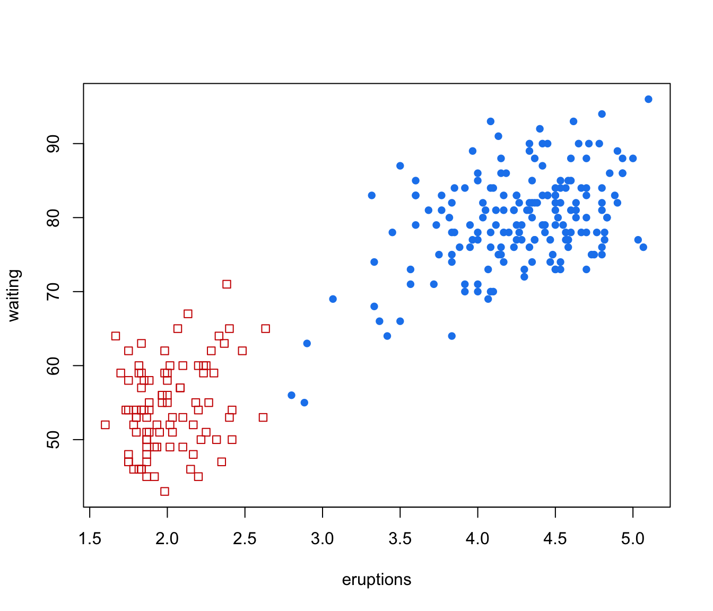

Identifying Connected Components in Gaussian Finite Mixture Models for Clustering
gmmhd.RdStarting with the density estimate obtained from a fitted Gaussian finite mixture model, cluster cores are identified from the connected components at a given density level. Once cluster cores are identified, the remaining observations are allocated to those cluster cores for which the probability of cluster membership is the highest.
Arguments
- object
An object returned by
Mclust.- ngrid
An integer specifying the number of grid points used to compute the density levels.
- dr
A list of parameters used in the dimension reduction step.
- classify
A list of parameters used in the classification step.
- x
An object of class
'gmmhd'as returned by the functiongmmhd.- what
A string specifying the type of plot to be produced. See Examples section.
- ...
further arguments passed to or from other methods.
Details
Model-based clustering associates each component of a finite mixture distribution to a group or cluster. An underlying implicit assumption is that a one-to-one correspondence exists between mixture components and clusters. However, a single Gaussian density may not be sufficient, and two or more mixture components could be needed to reasonably approximate the distribution within a homogeneous group of observations.
This function implements the methodology proposed by Scrucca (2016) based on the identification of high density regions of the underlying density function. Starting with an estimated Gaussian finite mixture model, the corresponding density estimate is used to identify the cluster cores, i.e. those data points which form the core of the clusters. These cluster cores are obtained from the connected components at a given density level \(c\). A mode function gives the number of connected components as the level \(c\) is varied. Once cluster cores are identified, the remaining observations are allocated to those cluster cores for which the probability of cluster membership is the highest.
The method usually improves the identification of non-Gaussian clusters compared to a fully parametric approach. Furthermore, it enables the identification of clusters which cannot be obtained by merging mixture components, and it can be straightforwardly extended to cases of higher dimensionality.
Value
A list of class gmmhd with the following components:
- Mclust
The input object of class
"Mclust"representing an estimated Gaussian finite mixture model.- MclustDA
An object of class
"MclustDA"containing the model used for the classification step.- MclustDR
An object of class
"MclustDR"containing the dimension reduction step if performed, otherwiseNULL.- x
The data used in the algorithm. This can be the input data or a projection if a preliminary dimension reduction step is performed.
- density
The density estimated from the input Gaussian finite mixture model evaluated at the input data.
- con
A list of connected components at each step.
- nc
A vector giving the number of connected components (i.e. modes) at each step.
- pn
Vector of values over a uniform grid of proportions of length
ngrid.- qn
Vector of density quantiles corresponding to proportions
pn.- pc
Vector of empirical proportions corresponding to quantiles
qn.- clusterCores
Vector of cluster cores numerical labels;
NAs indicate that an observation does not belong to any cluster core.- clusterCores
Vector of numerical labels giving the final clustering.
- numClusters
An integer giving the number of clusters.
References
Scrucca, L. (2016) Identifying connected components in Gaussian finite mixture models for clustering. Computational Statistics & Data Analysis, 93, 5-17.
Author
Luca Scrucca luca.scrucca@unipg.it
Examples
# \donttest{
data(faithful)
mod <- Mclust(faithful)
summary(mod)
#> ----------------------------------------------------
#> Gaussian finite mixture model fitted by EM algorithm
#> ----------------------------------------------------
#>
#> Mclust EEE (ellipsoidal, equal volume, shape and orientation) model with 3
#> components:
#>
#> log-likelihood n df BIC ICL
#> -1126.326 272 11 -2314.316 -2357.824
#>
#> Clustering table:
#> 1 2 3
#> 40 97 135
plot(as.densityMclust(mod), faithful, what = "density",
points.pch = mclust.options("classPlotSymbols")[mod$classification],
points.col = mclust.options("classPlotColors")[mod$classification])

GMMHD <- gmmhd(mod)
summary(GMMHD)
#> ---------------------------------------------------------
#> GMM with high-density connected components for clustering
#> ---------------------------------------------------------
#>
#> Initial model: Mclust (EEE,3)
#>
#> Cluster cores:
#> 1 2 <NA>
#> 166 91 15
#>
#> Final clustering:
#> 1 2
#> 178 94
plot(GMMHD, what = "mode")
plot(GMMHD, what = "cores")

plot(GMMHD, what = "clusters")

# }